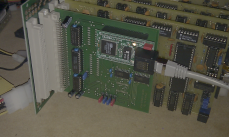

Ethernet board
(C) 2010-2011 André Fachat
This board is an Ethernet board for the CS/A computer. It uses the Olimex Ethernet adapter which has a CS8900A chip on it - that chip is often used with 8 bit computers - plus physical layer adapter and Ethernet plug. For the board see Olimex.com, in the left hand menu click "Other", then "CS8900A-H".
The board thus mainly does signal voltage level translation (the Olimex adapter only comes in 3.3V) and address selection.
The board can be implemented in two options for the voltage level translation. One uses two 74LVX4245 (SMD), the other option uses a 74LVX244 (SMD), a CMOS 4050, and a 74ALS245. For more details see the schematics and board. Currently only the '4245 option is tested.
As a driver I ported the uIP v1.0 TCP/IP stack to the cc65 compiler, and integrated the CS8900A driver from contiki v1 (which also uses uIP).
- 2011-01-11 Published the V1.0B version with the /SBHE fix.
- 2011-01-04 Published this page
Table of content
UIP PET driver
This is the uIP v1.0 TCP/IP stack ported to the PET, which runs on my CS/A computer using the PET ROMs.

The Ethernet board in the '4245 option.
The The CS8900A is configured to be used at $E8C0. The board can be jumpered to $E8D0 as well. In the uIP driver code provided here I have only implemented the "hello world" program as included in the uIP stack. That however should give you an indication how to implement your own programs. |
|
{kind=link}
Version: 1.0B
Status: prototype Notes
| Files
|
{kind=link}
{kind=link}
Version: 1.0A
Status: prototype Notes
| Files
|
{kind=link}
{kind=link}
Return to Homepage